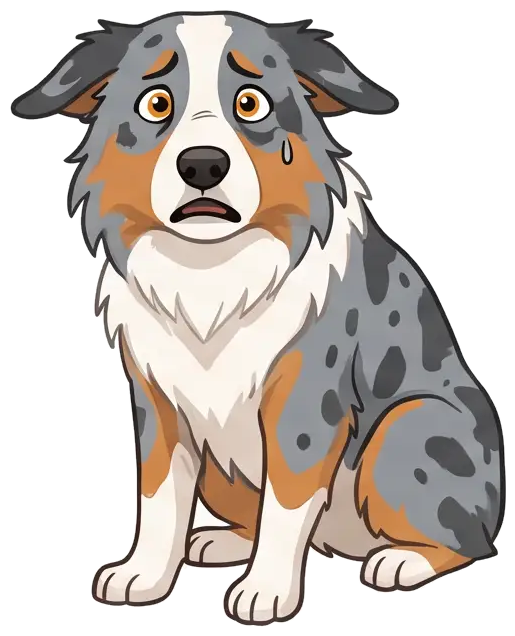

Ansteckend
Gähnen steckt auch Hunde an.

*gääähn*
Die Studie
0 von 29 Hunden gähnten mit.
Studie: Birkbeck, University of London (2008)
Noch spannender
Bei dir gähnt er eher mit.
🧡
Sein Mensch
öfter
👤
Fremde Person
seltener
Studie: Universität Tokio (2013) · Balken schematisch
Aber Achtung
Gähnen kann auch Stress zeigen.
🩺 beim Tierarzt
🔊 bei Lärm
😬 bei Streit

gähnen ist ansteckend – auch für hunde
in einer studie gähnten 21 von 29 hunden
nur weil ein mensch gähnte
bei ihrem menschen öfter
als bei fremden
gähnen kann aber auch stress bedeuten
Folgen für mehr Hundewissen

HundeWissenTv